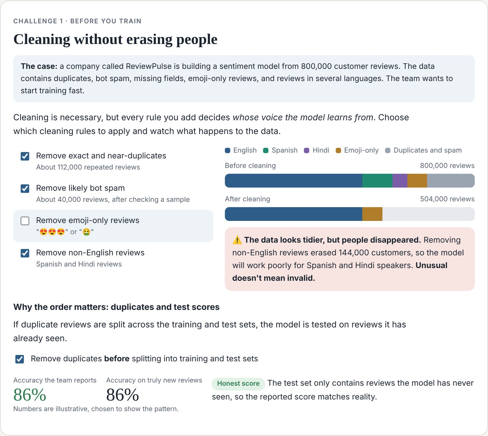
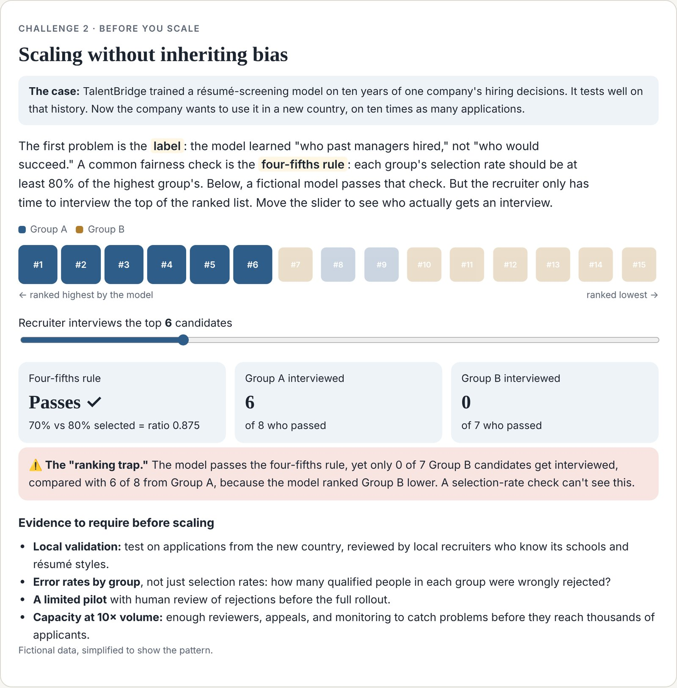
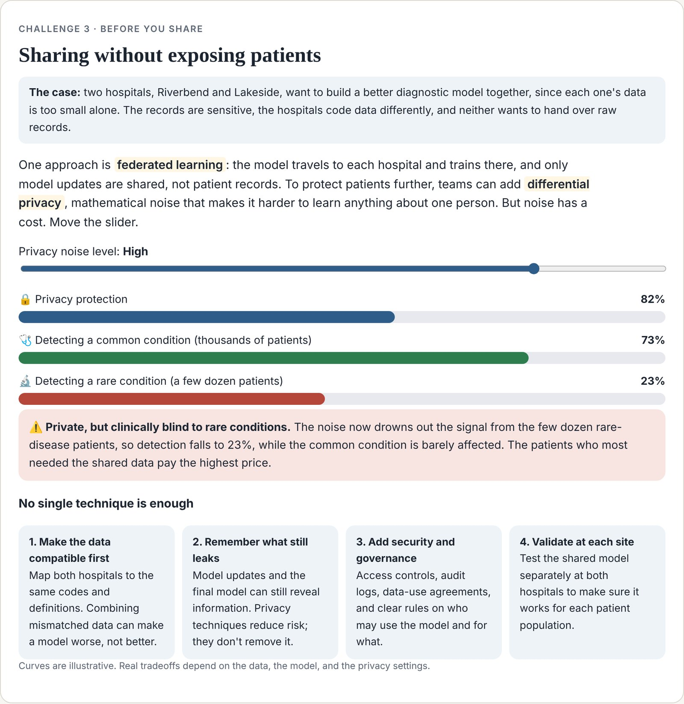

Artifact 4
The Data Readiness Playbook: Cleaning, Scaling, and Sharing Data Responsibly
← All artifactsArtifact Visual



Introduction
Most AI projects don't fail because of the algorithm. They fail because of the data: data that was cleaned in a way that erased people, data from the past that carried old biases into new decisions, or sensitive data that could not be shared safely. This artifact is an interactive playbook that walks through those three challenges and gives readers a checklist they can use on their own projects.
My earlier artifacts show how I build an AI tool, research AI's history, and explain how neural networks learn. This one shows a different competency: responsible data practice, meaning the judgment to ask the right questions before training, scaling, or sharing a model.
Description
The playbook is an interactive web page built around three fictional cases from the course:
- Cleaning without erasing people. Visitors choose cleaning rules for 800,000 customer reviews and compare the data before and after. Removing duplicates and spam improves the data; removing emoji-only or non-English reviews quietly erases customers. A second control shows how duplicates that leak into the test set inflate a model's accuracy score.
- Scaling without inheriting bias. A résumé-screening model passes the four-fifths rule, but a slider showing how many candidates a recruiter interviews reveals the "ranking trap," where one group is ranked too low to ever be seen. The section lists the evidence to require before scaling to a new country and ten times the volume.
- Sharing without exposing patients. Two hospitals collaborate through federated learning. A privacy noise slider shows the tradeoff: stronger protection for patients, but much weaker detection of rare conditions.
- The Data Readiness Checklist. Twelve questions grouped into "before you train," "before you scale," and "before you share" that readers can tick off for their own projects.
Objective
This artifact began as the Workshop 4 Data Challenge Scenarios assignment in AIML 500: Machine Learning Fundamentals, where I worked through three realistic data challenges with an AI coaching chatbot and explained my reasoning for each. The objective of the portfolio version was to turn that reasoning into something others can use: a hands-on guide that shows managers, analysts, and new practitioners why data decisions shape a model's fairness, accuracy, and safety, and what to check before each stage of a project.
Process
- Working through the scenarios. In the original activity, I proposed and defended approaches to each challenge: keeping emoji and non-English reviews instead of removing them, pausing the hiring model's rollout because past hiring decisions are not a neutral label, and using federated learning with data standardization for the hospitals.
- Revising under questioning. The coaching chatbot challenged my reasoning, and two of its questions changed my thinking (shown in the table below).
- Choosing what to visualize. For each scenario, I picked the one idea that is easiest to misunderstand and hardest to see in text: who disappears during cleaning, how a ranking hides bias that a fairness check misses, and what privacy noise costs.
- Building and testing. I built the playbook as an interactive page, used illustrative numbers labeled as such, and tested every control on desktop and mobile.
Feedback that shaped the final version
| Feedback | What I changed |
|---|---|
| When asked how I would check that cleaning improved the data, I first suggested testing on new datasets. The coach pointed out a more direct check: comparing the data before and after cleaning to see whether a group was removed. | Built Challenge 1 around exactly that comparison, with "before" and "after" bars that show when a cleaning rule erases a group of customers. |
| I initially claimed differential privacy means no patient record can "ever" be reverse-engineered. The coach asked what heavy privacy noise would do to detecting a rare disease. | Built Challenge 3's privacy slider to show the tradeoff, and wrote the page to say that privacy techniques reduce risk rather than remove it. |
Tools and Technologies Used
- HTML, CSS, and JavaScript: the interactive cleaning rules, before-and-after bars, ranking slider, privacy slider, and checklist.
- GitHub Pages: hosts the playbook and this portfolio.
- Research sources: Mehrabi et al. (2021) on bias in machine learning and the NIST framework for managing AI bias (Schwartz et al., 2022).
- Claude (Anthropic): served as the coaching chatbot in the original activity and helped build this page. I made the decisions in each scenario, chose what to visualize, and made the final edits.
Value Proposition
If you are about to start, scale, or share an AI project, this playbook shows you in ten minutes the three data mistakes most likely to make it unfair, inaccurate, or unsafe, and gives you a checklist to catch them first.
For managers, it turns abstract warnings about "bias" and "privacy" into concrete questions they can ask their teams. For analysts and new practitioners, it shows that a tidy dataset, a passing fairness check, or a strong privacy setting can each hide a real problem.
Unique Value
Most guides to data quality, fairness, and privacy treat them as separate topics with separate rules. This playbook shows a common thread: in each case, the step that looks responsible on the surface can hurt the people the model most needs to serve. Removing "unusual" reviews erases customers who write in other languages, passing a selection-rate check can still bury one group, and maximum privacy can leave patients with rare conditions undiagnosed. Letting readers trigger each of these outcomes themselves makes the lesson stick in a way a list of rules does not.
Relevance
As organizations move AI from pilots into everyday decisions about customers, job applicants, and patients, data problems become people problems. The NIST framework stresses that managing AI bias requires attention to human and systemic factors, not only technical fixes (Schwartz et al., 2022). This playbook reflects how I want to work as an AI engineer: asking whose data is missing, what a label really measures, and what each safeguard costs, before a model reaches the people it affects.
References
Mehrabi, N., Morstatter, F., Saxena, N., Lerman, K., & Galstyan, A. (2021). A survey on bias and fairness in machine learning. ACM Computing Surveys, 54(6), Article 115. https://doi.org/10.1145/3457607
Schwartz, R., Vassilev, A., Greene, K., Perine, L., Burt, A., & Hall, P. (2022). Towards a standard for identifying and managing bias in artificial intelligence (NIST Special Publication 1270). National Institute of Standards and Technology. https://doi.org/10.6028/NIST.SP.1270